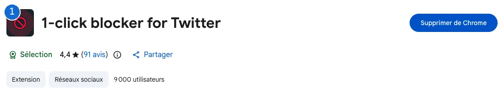
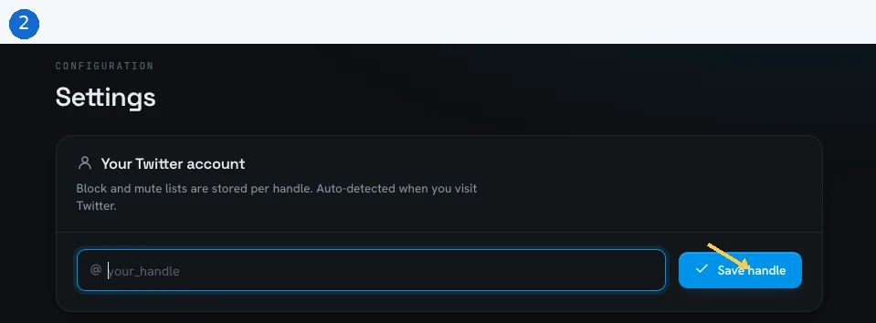
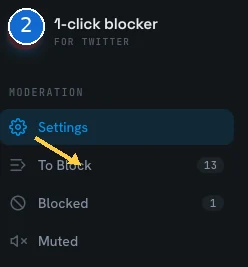
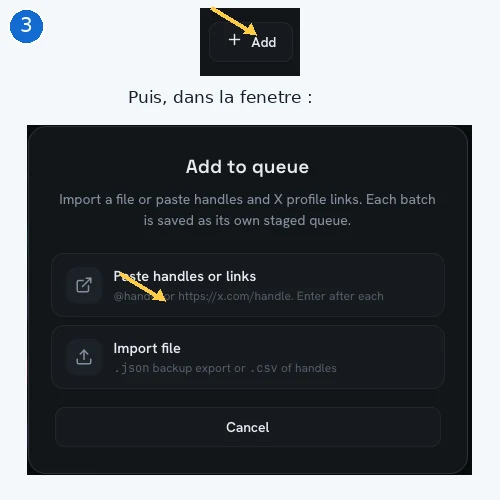
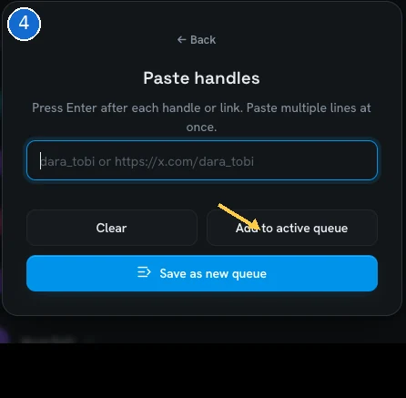
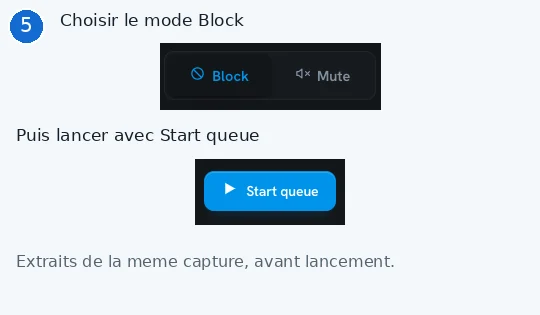
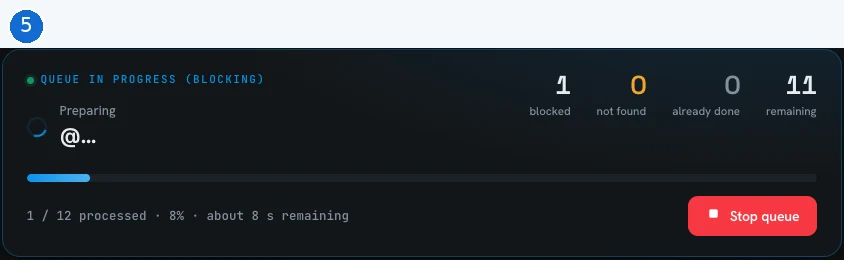
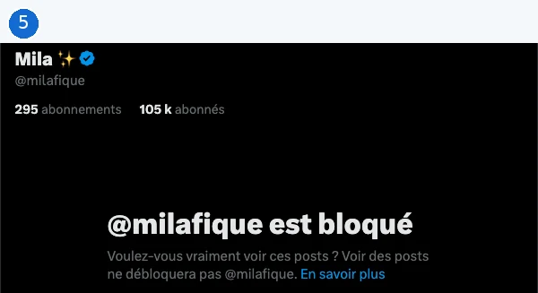

Mon fil.
Mon choix.
Choisissez les comptes que vous souhaitez bloquer sur X. Décochez-en autant que vous voulez. Aucun compte n'est bloqué sans votre action.
Aucun compte ne correspond à votre recherche.
Ajouter mes comptes
Saisissez un identifiant X, par exemple @exemple. Il sera ajouté à votre sélection.
Importer une liste personnelle
Un identifiant par ligne, ou une liste séparée par des virgules. Importation locale, sans serveur.
Utiliser ma sélection
46 comptes prêts à être copiés.
Bloquer votre sélection sur X
Un parcours en cinq étapes sur ordinateur, avec Chrome. Cette page prépare la liste ; l’extension réalise les blocages uniquement lorsque vous lancez sa file.
Préparez votre sélection
Décochez les comptes à conserver, puis cliquez sur Copier ma sélection plus haut. Sur ordinateur, installez 1-click blocker for Twitter dans Chrome et connectez-vous à X dans ce navigateur.

Capture fournie : « Supprimer de Chrome » indique que l’extension est déjà installée ; ce bouton ne sert pas à l’ouvrir. Agrandir la capture
Vérifiez votre profil X
Ouvrez l’extension depuis le menu Extensions de Chrome et, dans Settings → Your Twitter account, vérifiez votre @identifiant, normalement reconnu après une visite de X dans ce navigateur. S’il manque, saisissez-le puis cliquez sur Save handle ; ouvrez ensuite To Block.

La détection automatique est annoncée par l’extension ; si nécessaire, renseignez uniquement votre @identifiant, jamais votre mot de passe. Agrandir la capture

Le menu de gauche dans le centre de contrôle de l’extension. Agrandir la capture
Ajoutez votre liste
Dans To Block, cliquez sur + Add, puis sur Paste handles or links. Choisissez ce parcours pour coller la sélection copiée depuis cette page.

Deux extraits de captures réelles : le bouton Add, puis la fenêtre qui propose le collage ou Import file. Agrandir la capture
Collez, puis ajoutez à la file
Collez votre sélection dans le champ de Paste handles : plusieurs lignes sont acceptées. Cliquez sur Add to active queue pour l’ajouter à la file active, ou sur Save as new queue pour créer une file séparée.

L’ajout à une file prépare la liste ; le lancement du traitement se fait à l’étape suivante. Agrandir la capture
Vérifiez, puis lancez
Relisez toute la file active, y compris les comptes qui y étaient déjà, et vérifiez les mentions not found (introuvable). Quand vous êtes prêt, choisissez Block, puis Start queue ; après le traitement, ouvrez quelques profils sur X pour vérifier que le blocage est actif.

Commandes visibles avant lancement. Start queue déclenche le traitement de la file active. Agrandir la capture

Autre capture réelle fournie : l’extension annonce 1 compte bloqué et 11 restants à cet instant. Stop queue permet d’arrêter la file ; la capture ne prouve pas sa fin ni la vérification sur X. Agrandir la capture

Vérification sur X fournie par l’utilisateur : « @milafique est bloqué ». Cet exemple confirme l’état de ce profil, pas le succès de toute la file. Agrandir la capture
Et le fichier téléchargé ?
Le fichier .txt contient un @identifiant par ligne : ouvrez-le, copiez son contenu et utilisez « Paste handles or links ». Le bouton « Import file » de l’extension annonce des fichiers .csv ou des sauvegardes .json ; l’import direct du .txt n’est pas vérifié.
Un compte est signalé « not found » ?
L’extension n’a pas trouvé ce compte. Vérifiez son identifiant sur X avant de réessayer : ne supposez pas qu’il a été bloqué.